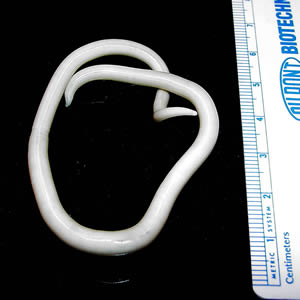

A worm that takes the scenic route.
Ascaris is a large intestinal roundworm. CDC identifies it as the most common human worm parasite globally.

CDC / DPDx · Public domain
From soil to intestine
People swallow infective eggs from fecally contaminated soil or produce. Eggs need time in the environment to become infective. This is especially important where sanitation is limited; risk is not the same in every country.
An unexpected detour through the lungs
After eggs hatch, larvae cross the intestinal wall, travel through the circulation to the lungs, climb the airways, and are swallowed. Back in the small intestine, they grow into adult worms. Light infections may cause no symptoms; migration can cause cough, and heavy worm burdens can obstruct the intestine.
At the laboratory bench
A stool ova-and-parasite examination can reveal thick-shelled Ascaris eggs. Their surface and shape help distinguish them from other worm eggs. Adult worms may also be submitted for identification.
Treatment & prevention
Clinicians use antiparasitic medicines such as albendazole or mebendazole. Sanitation, washing hands, and washing, peeling, or cooking produce help prevent infection. Severe abdominal symptoms or suspected obstruction need urgent medical evaluation.
Does this worm burrow in through bare feet?
Ascaris usually enters when eggs are swallowed. Hookworm is the classic soil-associated worm whose larvae can penetrate skin. Similar category, different entry route.
Sources & further exploration
Educational content reviewed October 4, 2026. Photographs show real specimens or research observations; stains and imaging methods affect their appearance. CDC images are available free from CDC. Their use does not imply endorsement by CDC, HHS, or the U.S. Government.